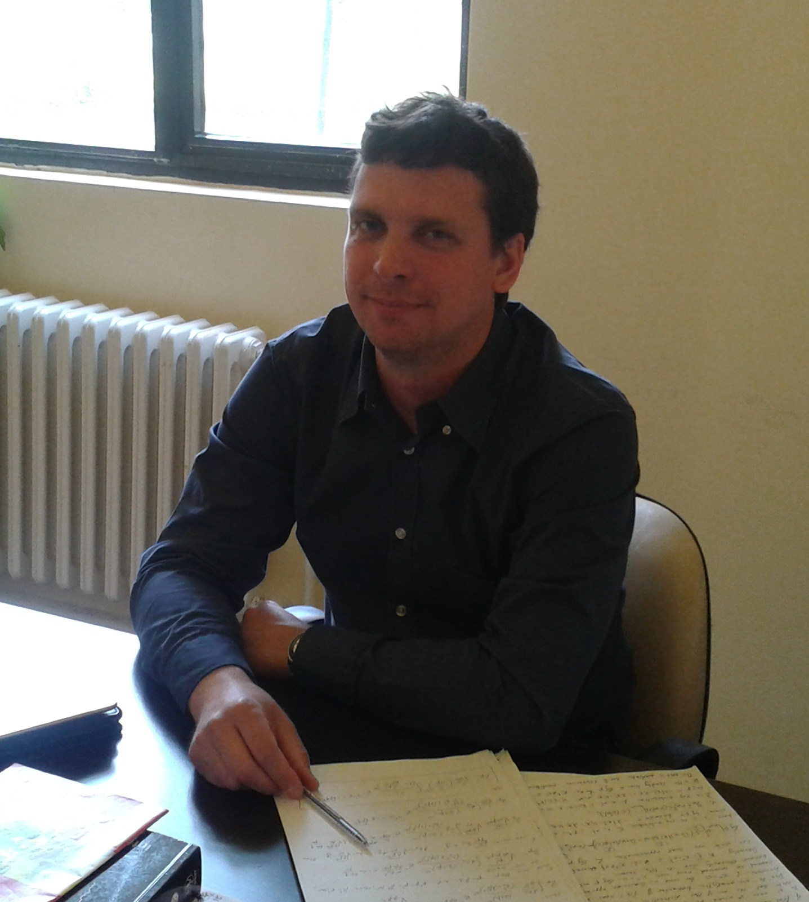

Yuriy Mishchenko
yuriy dot mishchenko at gmail dot com

I am a senior scientist at Amazon Alexa Speech. I work on wake word detection for Alexa. Before Amazon, I was a professor at Izmir University of Economics in Turkey and worked on computational neuroscience, brain-computer interfaces, and biomedical informatics. The areas where I have expertise include advanced statistics, statistical and machine learning, deep learning, high performance computing, optimization, software development and programming including Python, Java, R, C#, C/C++, PHP, JavaScript, SQL, Matlab, Big Data analytics, data science, advanced math, physics, computational neuroscience, brain-machine interfaces, and other. See the LinkedIn and ResearchGate profiles below for more details.
ResearchGate Link: https://www.researchgate.net/profile/Yuriy_Mishchenko2
LinkedIn Link: http://www.linkedin.com/pub/yuriy-mishchenko/14/62/531
Twitter Link: https://twitter.com/gmyuriy
My PGP public key: Public Key.
Website sections:
Research
Teaching
CV / Publications
Publication list